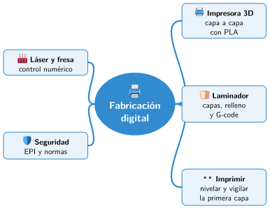

Bloque V · Diseño y fabricación digital
UD12 Impresión 3D y prototipado rápido
Sesiones
- Sesión 12.1 Cómo funciona una impresora 3D
- Sesión 12.2 Preparar la impresión: el laminador
- Sesión 12.3 Imprimir, controlar, calibrar y mantener la impresora
- Sesión 12.4 Corte láser y fresado CNC
- Sesión 12.5 Seguridad en el taller
Al terminar la unidad
- 🛠️ Práctica con las herramientas
- 📝 Repaso de la unidad
- ✅ Autoevaluación
- 🎯 Situaciones de aprendizaje del bloque
Mapa mental de la unidad

✏️ Repasa la unidad con el mapa: tapa una rama y explica en voz alta lo que pone.